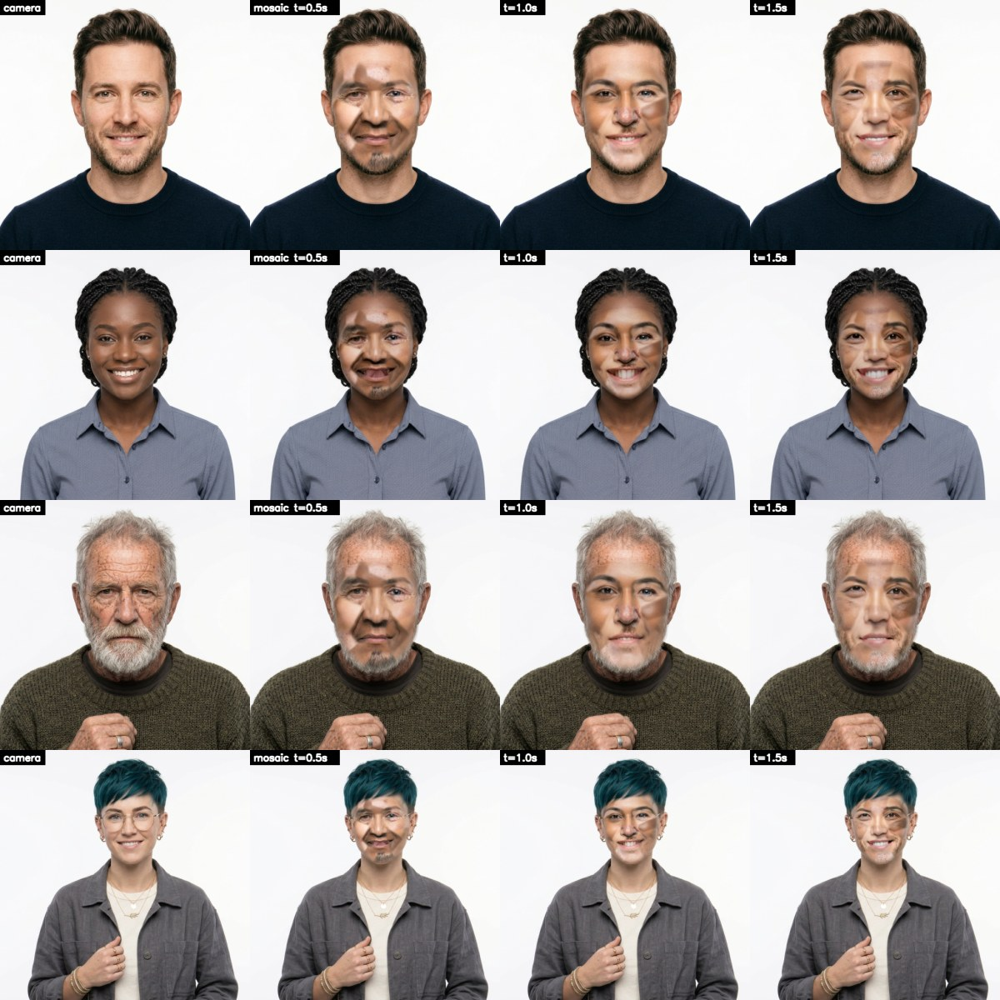

The scramble suit
Inspired by the scramble suit in A Scanner Darkly by Philip K. Dick (the 1977 novel, and Richard Linklater's 2006 film of it): the undercover agents' disguise, a shroud that shows a constantly shifting blur of thousands of different people's faces and bodies, so the wearer is nobody in particular. Mosaic Mask does the face, live, on a webcam.
What it looks like
Each row is one face: as the camera sees it, then as the mosaic half a second, a second and a second and a half later. Every piece follows the face's own shape, and every piece changes on its own timer, so the face never settles. Click to enlarge.

Use it
- Put face images in
faces/(the repo comes with 27). - Start
run.bat. The first time it sets itself up: Python 3.11 with MediaPipe, OpenCV and pyvirtualcam. - In your call, pick the camera OBS Virtual Camera. OBS Studio must be installed for its virtual camera; it doesn't have to be running.
Keys
| M | mosaic on / off |
| V | virtual camera on / off |
| R | reload faces/ |
| Q Esc | quit |
Sliders
| fragments | how many pieces the face is cut into |
| swap ms | how often each piece changes to someone else |
| fade ms | how long a piece blends into the next face |
| colour % | how much the mosaic takes on your skin tone |
The faces
The more there are, the less any one of them shows: 100 or more is good. Generate them rather than using photos of real people: a disguise made of real people's faces isn't fair on them. What works best: looking at the camera, the whole face visible, even light, a neutral face or a slight smile, and every age, skin tone and gender. The mix is the point.
How it works
The face pool
Every face in faces/ is read once: MediaPipe Face Mesh finds 468 points on it, and it's unwrapped onto one shared layout, so a piece of any face lines up with the same piece of any other.
The mosaic
The shared face is cut into a patchwork around the eyes, brows, nose, mouth, cheeks, chin, jaw and forehead. Each piece shows a different face and swaps to a new one on its own timer, blending as it goes.
Onto you
Every frame, Face Mesh finds your face and the patchwork is warped onto it triangle by triangle, so the borrowed mouth moves with yours. Its colour leans towards your skin, its edge melts into your head.
Out
The finished frame goes to OBS's virtual camera, about 30 times a second at 720p, on the CPU: only the face's box is worked on.